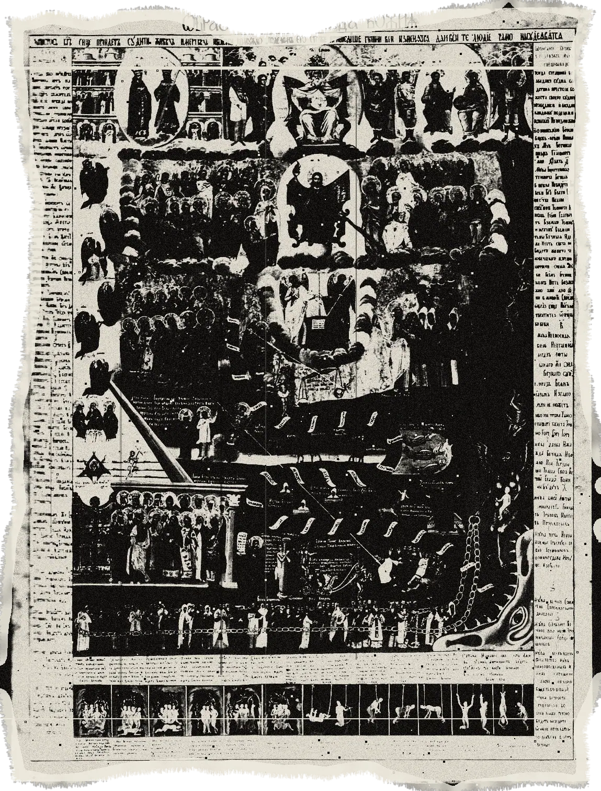
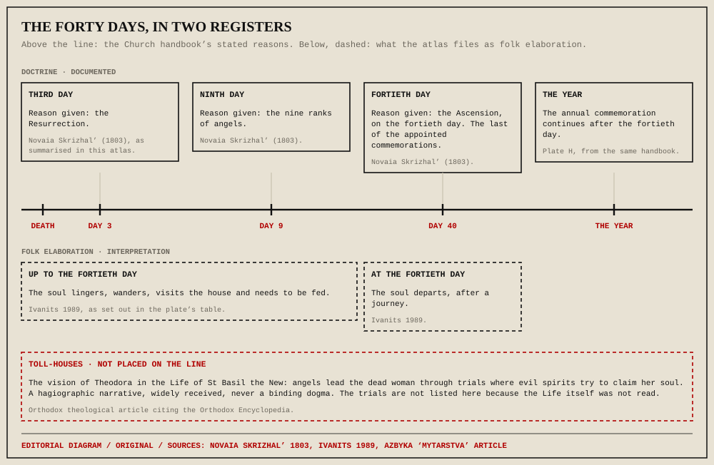

VOL. I · PLATE H · 08 / 09
THE AFTERLIFE
Doctrine, image, and the soul’s itinerary
Orthodox teaching about the dead is precise, and it is not the same thing as the crowded cosmology of the icon. The atlas keeps the two apart, then puts them on the same page.
Iconography 15th–18th c.; doctrine and practice to the present · Novgorod; the Volga region; Russia · Orthodox Christianity; folk elaboration


H / 01
What the Church says
The handbook Novaia Skrizhal’ (1803) gives the Church’s reasons for commemorating the dead on the third, ninth and fortieth days, and Simeon of Thessalonica, whom it quotes, adds a yearly commemoration by the relatives. The ninth day asks that the dead be counted among the nine angelic ranks and in the company of the saints; the fortieth is tied by Simeon to the Ascension, so that the dead may be raised to meet the Judge. Neophyte of Rhodes ties it to Israel’s mourning for Moses, and the handbook itself points to the number forty in Scripture. Only chapter XXIII §§ 2–3 were read; the funeral service is not quoted here.
The Church’s language about the state between death and the resurrection is restrained in the passages read. That restraint is an editorial reading, not a quotation. Where popular literature supplies a detailed itinerary (where the soul goes on which day, what it sees), the atlas marks it as devotional or folk elaboration, not as doctrine.
A profound divide between canonical dogma and vernacular belief governed the fate of early dead and unbaptised children (Sedakova 2020, pp. 51–58; Dronova 2024, pp. 203–205). In Orthodox canonical theology, infants who died unbaptised bore no personal sins and thus endured no active torment in Gehenna, but being uncleansed of ancestral sin, they could not receive church burial, liturgical commemoration (panikhida), or enter into the beatific vision. In vernacular practice, this exclusion generated profound anxiety: unbaptised infants were buried outside sacred ground—beneath house eaves (so rainwater might symbolically wash them), under thresholds, or along fence boundaries—and popular eschatological tales envisioned them wandering in a dark borderland as unquiet souls (kukiata, poterchata) pleading for a cross. Baptised children, conversely, were celebrated in folk faith as sinless 'angels' dwelling immediately in the celestial gardens of Eden; loud maternal wailing over them was formally discouraged lest excessive tears 'soak their angelic wings' in Paradise.

H / 02
Reading the icon
The Last Judgment icon is a diagram as much as a painting. What the reproduction shows: a title across the top and long columns of text down both sides; Christ enthroned in glory with saints on either side; scales near the centre; a red river of fire on the right ending in a monstrous mouth; a winding band with labelled stations; a gate with the righteous at the lower left; and a row of small compartments of torment along the bottom, each with a caption. The small lettering could not be read in this reproduction, so no inscription is quoted and no social type is assigned to any compartment.
The Commons description of the icon calls it typical of mid-to-late eighteenth-century iconography and says it was influenced by printed engravings. The atlas reads the text columns and captioned compartments as page-like in that sense. Who made the icon, for whom, and in what milieu is not stated in the description; an earlier version spoke of an urban artisan milieu and of viewers who read, and both statements are withdrawn.

| Question | Doctrine (documented) | Folk elaboration (interpretation) |
|---|---|---|
| What happens at death? | The soul lives on and the body will be raised; the dead stand before the Judge (the handbook, quoting Simeon of Thessalonica) | The soul stays in the house for forty days, drinks the water set out and feeds on the steam of food (Zelenin 1991, pp. 345, 356) |
| Why commemorate on the fortieth day? | Reasons given by the authorities the handbook quotes: the Ascension (Simeon of Thessalonica), Israel’s mourning for Moses (Neophyte of Rhodes); the handbook itself points to the number forty in Scripture | The fortieth day is the ‘seeing off’ of the soul to the other world (Zelenin 1991, p. 356) |
| Can the living help the dead? | Yes: commemoration by the relatives on set days and yearly (Simeon of Thessalonica) | Yes: food, gifts, a place at table (Zelenin 1991, p. 356) |
| What is the afterlife like? | Not set out in the passages read; the Church’s language is restrained (see H / 01) | Burial gifts are explained by a fiery river to cross, a glass mountain to climb, debts to pay (Zelenin 1991, p. 348; Barsov 1872, p. 305) |
| What is the fate of dead children? | Unbaptised infants are exempt from torment but excluded from church funeral and the Kingdom; baptised infants are sinless souls received into God's mercy | Unbaptised children wander in twilight as restless souls or are buried under eaves; baptised infants are angels in Eden whose wings are weighed down by tears (Sedakova 2020; Dronova 2024) |


The toll-houses
A narrative that is not a dogma
The best-known popular itinerary of the soul in Russia comes from one text: the vision of Theodora in the Life of St Basil the New. In it the dead woman appears to Basil’s disciple Gregory and describes how angels escorted her through a series of trials, at which evil spirits tried to claim her soul for its sins. According to the Orthodox Encyclopedia, as cited in a Russian theological article, the Life was written in Constantinople in the second half of the tenth century and exists in several redactions. The same article states that the toll-house narrative became widely accepted but never acquired the status of a binding dogma of the Church, and reads its images as parable-like language, not as literal topography. The atlas takes the distinction from that article: the narrative is documented as hagiography and widely received; its status as doctrine is disputed in the very source that defends it. The article was read, not the Life itself, so no list of the trials is given here.

Text
Funeral sticheron: «I weep and lament…»
Стихира на погребении: «Плачу и рыдаю…»
Original
English translation
This sticheron, Tone 8, is sung in the Orthodox funeral rite for the laity. It is not a folk lament and was not composed for a village performance; it is the Church's own funeral language. The text is attributed to John of Damascus (c. 676–749) and is received in the Slavonic funeral rite.
The sticheron states the paradox the plate discusses: the human person is created in the image of God and is nevertheless disfigured in the grave, and this is a «mystery» ordained by God, not a defeat of the creator. The English translation is the atlas's own; it follows the Church Slavonic text, not a modern Russian translation.
- преставльшемуся
- The one who has passed away; the departed.
- тление
- Corruption, decay; the physical dissolution of the body.
Source Funeral sticheron, Tone 8, in the Orthodox burial rite for the laity. · open source
Rights Public domain. The text is a liturgical composition of the first millennium, received in the Slavonic funeral rite. It is public domain. The English translation is the atlas's own and is not taken from a modern Russian translation.
Spiritual verse
O you doves, you white doves (Verse on the Parting of Soul and Body)
Уж вы голуби, уж вы белые
Original
English translation
A canonical Russian spiritual verse (dukhovnyi stikh), performed by wandering blind psalm-singers (kaliki perekhozhie) and village mourners at memorial meals, wakes, and church porches. The dialogue between the parting soul and guardian angels (appearing in the likeness of white doves) encapsulates the folk-theological drama of bodily decay versus spiritual trial.
In vernacular Orthodoxy, the body belongs irrevocably to the damp earth (syraia zemlia), while the soul embarks on an aerial transit past Paradise and the angelic realms to the divine judgment. Bessonov recorded numerous variants across central and northern provinces. In Plate H, this oral folk text stands beside the canonical liturgical sticheron, contrasting Church dogma with vernacular verse.
- ангелы-хранители
- Guardian angels; in vernacular belief, they escort the newly departed soul through the air to judgment.
- сыра земля
- Damp earth; the traditional poetic formula for the soil receiving the decomposing body.
- суд праведный
- The righteous or particular judgment (chastnyi sud) undergone by the individual soul after bodily death.
Source P. A. Bessonov, Kaliki perekhozhie: sbornik stikhov i issledovanie, vyp. 1 (Moscow, 1861), stikh 17. · open source
Rights Public domain. Bessonov died in 1898; the collection was published in 1861. Traditional folk text in the public domain in Russia and the United States.
Apparatus sources · related plates · terms
Sources for this plate
- skrizhal Veniamin (Krasnopevkov-Rumovskii), Archbishop — Novaia Skrizhal’ (1803 (read in a modern online edition))
- merridale2000 Merridale, Catherine — Night of Stone: Death and Memory in Russia (2000)
- azbyka-mytarstva Neskuchny Sad (journal), expert: Archpriest Boris Levshenko — Mytarstva: bogoslovskoe modelirovanie (Toll-houses: theological modelling) (n.d.)
- funeral-sticheron John of Damascus (attrib.) — Stikhira na pogrebenii: «Plachu i rydaiu…» (received text (8th c. attrib.))
- zelenin1927 Zelenin, Dmitry K. — Vostochnoslavianskaia etnografiia (Russian translation of Russische (Ostslavische) Volkskunde, Berlin–Leipzig 1927), transl. K. D. Tsivina (1991 (German original 1927))
- barsov1872 Barsov, Elpidifor Vasil’evich — Prichitaniia Severnogo kraia (1872–1886)
- sedakova2020 Sedakova, Irina — Unlived Life: The Death and Funeral of a Child in Slavic Traditional Culture (2020)
- dronova2024 Dronova, T. I. — Tema smerti v kartine mira staroverov-bespopovtsev Ust’-Tsil’my (The theme of death in the world picture of the priestless Old Believers of Ust-Tsilma) (2024)
- bessonov1861 Pyotr Alekseyevich Bessonov — Kaliki perekhozhie: sbornik stikhov i issledovanie (1861)
URLs, access dates and limitations are in the bibliography.